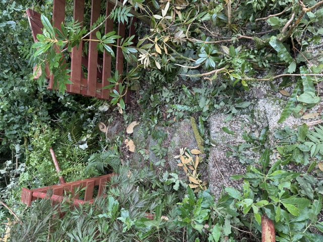
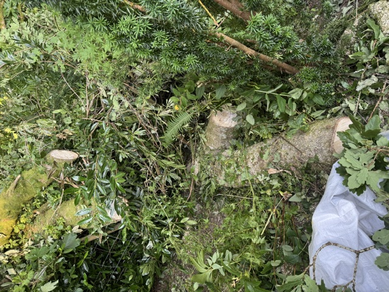
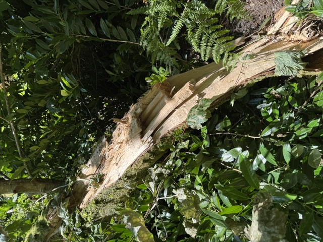
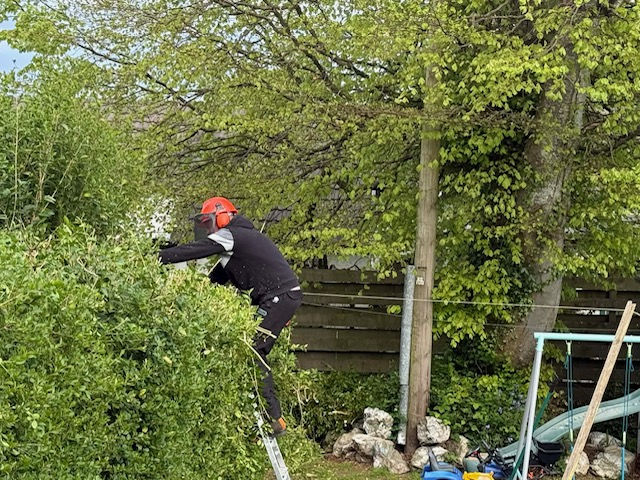
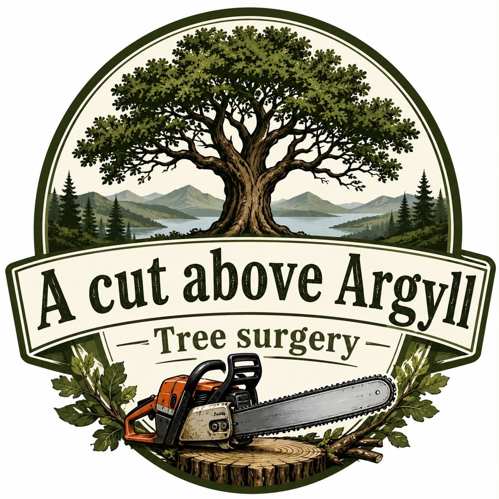

🌳 Tree Surgery
Tree pruning, crown reductions, thinning and complete tree care carried out with professional equipment.
Professional Tree Surgery, Hedge Cutting & Grounds Maintenance throughout Dunoon, Cowal Peninsula and Argyll.
Local, dependable and committed to delivering a professional service on every job.
Professional equipment and safe working practices on every job.
Pruning, reductions, dismantling and complete tree removals.
Friendly, punctual and committed to leaving every garden tidy.
Honest advice and no-obligation quotes throughout Argyll.
Professional outdoor services delivered safely, efficiently and to the highest standard.
Tree pruning, crown reductions, thinning and complete tree care carried out with professional equipment.
Safe dismantling and removal of dangerous, storm-damaged or unwanted trees.
Regular maintenance, shaping and full hedge reductions for gardens and commercial properties.
Grass cutting, site clearance, garden maintenance and general outdoor property care.
Rapid response for fallen trees, storm damage and dangerous branches where safe to do so.
All green waste removed where agreed, leaving your property clean, tidy and ready to enjoy.
A selection of recent work completed across Dunoon, Cowal Peninsula and Argyll.

Professional pruning and tree management carried out safely and efficiently.

Safe dismantling of damaged and unwanted trees using professional equipment.

Neat, tidy hedge reductions and regular maintenance for homes and businesses.

Complete garden clearance and outdoor maintenance completed to a high standard.
Based in Dunoon, A Cut Above Argyll provides professional tree surgery, hedge cutting and grounds maintenance across Cowal Peninsula and the wider Argyll area.
Every project is completed with safety, reliability and professionalism at the heart of everything we do.
Whether it's a single tree, a full garden clearance or ongoing grounds maintenance, we take pride in delivering quality workmanship and excellent customer service.
Get Your Free Quote